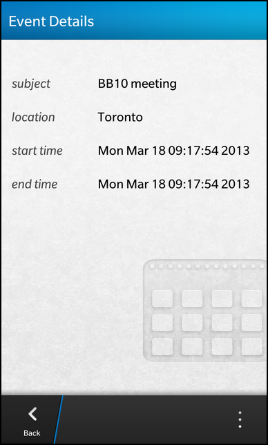

Calendar Example
Files:
- pim/calendar/assets/EventEditor.qml
- pim/calendar/assets/EventViewer.qml
- pim/calendar/assets/ViewerField.qml
- pim/calendar/assets/main.qml
- pim/calendar/src/Calendar.cpp
- pim/calendar/src/Calendar.hpp
- pim/calendar/src/EventEditor.cpp
- pim/calendar/src/EventEditor.hpp
- pim/calendar/src/EventViewer.cpp
- pim/calendar/src/EventViewer.hpp
- pim/calendar/src/main.cpp
- pim/calendar/calendar.pro
- pim/calendar/translations/calendar.pro
Description
The Calendar example is a simple calendar application to list, view, edit and delete the events available on the system or create new ones.



Overview
In this example we'll learn how to use the bb::pim::calendar API of the BB10 framework to work with the events available on the system.
The application has a clean separation between business logic and UI representation. All the business logic is encapsulated inside the three C++ classes Calendar, EventViewer and EventEditor. These classes use the bb::pim::calendar API internally to communicate with the calendar service of BB10 and provide all the necessary functionality and data to the UI via properties, signals and slots. The Calendar object is exported to the UI under the name '_calendar'.
The UI
The UI of this sample application consists of four pages:
- The main page
- The 'view event' page
- The 'edit event' page
- The 'create new event' page
The main page
The main page contains a ListView that displays a list of events and a SegmentedControl where the user can select a time range that is used as filter criterion for the list.
// The event list filter input SegmentedControl { Option { text: qsTr ("Today") value: "today" selected: true } Option { text: qsTr ("Week") value: "week" } Option { text: qsTr ("Month") value: "month" } onSelectedIndexChanged: { _calendar.filter = selectedValue } }
Whenever the user selects a different Option from the SegmentedControl, the 'filter' property of the exported Calendar object is updated.
// The list view with all events ListView { dataModel: _calendar.model listItemComponents: ListItemComponent { type: "item" StandardListItem { title: ListItemData.subject description: qsTr ("%1 - %2").arg(ListItemData.startTime).arg(ListItemData.endTime) } } onTriggered: { clearSelection() select(indexPath) _calendar.setCurrentEvent(indexPath) _calendar.viewEvent() navigationPane.push(eventViewer.createObject()) } }
The ListView uses the model provided by the Calendar object as data model and shows the subject, start time and end time properties inside the items.
Whenever the user clicks on an item, setCurrentEvent() is called on the Calendar object, which will mark the selected event as the 'current' event for viewing and editing. Afterwards the viewEvent() method is invoked on the Calendar object. This will setup the EventViewer object to make the data of the current event available to the 'view event' page. Finally, the 'view event' page is pushed on the NavigationPane.
attachedObjects: [ ComponentDefinition { id: eventEditor source: "EventEditor.qml" }, ComponentDefinition { id: eventViewer source: "EventViewer.qml" } ]
This page is loaded dynamically from a ComponentDefinition that references the file EventViewer.qml
The main page also contains an ActionItem inside its action bar, which can be invoked by the user to create a new event.
actions: [ ActionItem { title: qsTr ("New") imageSource: "asset:///images/action_addevent.png" ActionBar.placement: ActionBarPlacement.OnBar onTriggered: { _calendar.createEvent() navigationPane.push(eventEditor.createObject()) } } ]
When the action is triggered, the createEvent() method is invoked on the Calendar object, which will setup the EventEditor object to be in creation mode. Afterwards the 'create new event' page is pushed on the NavigationPane. This page is loaded dynamically from a ComponentDefinition that references the file EventEditor.qml.
The 'view event' page
The 'view event' page is implemented inside EventViewer.qml and retrieves all the data to display from the EventViewer object, which is accessible as a property of the Calendar object.
ViewerField { horizontalAlignment: HorizontalAlignment.Fill title: qsTr ("subject") value: _calendar.eventViewer.subject } ViewerField { horizontalAlignment: HorizontalAlignment.Fill topMargin: 50 title: qsTr ("location") value: _calendar.eventViewer.location }
The UI of the page consists of a list of ViewerField objects (which are implemented in ViewerField.qml), one for each event property (subject, location, start time and end time). These fields simply display a title text and a value text in a row. While the title texts are hard-coded, the value properties are bound against the properties provided by the EventViewer object. So whenever the event that is currently handled by the EventViewer is changed, the UI will be updated automatically.
actions: [ ActionItem { title: qsTr ("Edit") imageSource: "asset:///images/action_editevent.png" onTriggered: { _calendar.editEvent() navigationPane.push(eventEditor.createObject()) } }, DeleteActionItem { onTriggered: { _calendar.deleteEvent() navigationPane.pop() } } ]
To edit or delete the currently displayed event, the page contains two ActionItems. If the one for deleting the event is triggered, the deleteEvent() method is invoked on the Calendar object, which will call the appropriated methods on the bb::pim::calendar API internally. If the action for editing the event is triggered, the editEvent() method is invoked on the Calendar object, which will setup the EventEditor object to be in editing mode and make the data of the current event available to the 'edit event' page. Afterwards the 'edit event' page is pushed on the NavigationPane.
attachedObjects: [ ComponentDefinition { id: eventEditor source: "EventEditor.qml" } ]
The 'edit event' page is loaded dynamically from a ComponentDefinition that references the file EventEditor.qml.
The 'edit event' and 'create new event' page
For creating a new event or editing an existing one the same UI (EventEditor.qml) is used. The underlying business object EventEditor provides the property 'mode' to differ between the CreateMode and EditMode.
The page contains two actions in its TitleBar to create/save the current event or cancel the operation.
titleBar: TitleBar { id: pageTitleBar // The 'Create/Save' action acceptAction: ActionItem { title: (_calendar.eventEditor.mode == EventEditor.CreateMode ? qsTr ("Create" ) : qsTr ("Save")) onTriggered: { _calendar.eventEditor.saveEvent() navigationPane.pop() } } // The 'Cancel' action dismissAction: ActionItem { title: qsTr ("Cancel") onTriggered: navigationPane.pop() } }
Depending on the current mode the title of the accept action is set to 'Create' or 'Save'. In both cases, an invocation of the action will call the saveEvent() method on the EventEditor object, which will do the right thing internally, depending on the current mode.
If the user selects the dismiss action, the current page is popped from the NavigationPane.
TextField { id: subjectField hintText: qsTr ("Subject") onTextChanging: _calendar.eventEditor.subject = text }
For each property of an event, the page contains an editor field (e.g. a TextField for the subject). Whenever the user changes the content of the field, the associated property of the EventEditor object will be updated.
If the UI is in EditMode, the content of the editor fields is initialized with the values from the EventEditor object after the UI has been created.
onCreationCompleted: { if (_calendar.eventEditor.mode == EventEditor.EditMode) { subjectField.text = _calendar.eventEditor.subject locationField.text = _calendar.eventEditor.location startTimeField.value = _calendar.eventEditor.startTime endTimeField.value = _calendar.eventEditor.endTime } _calendar.eventEditor.initializeFolderDropDown(folderField) }
Additionally the DropDown field for selecting the calendar folder is initialized here.
The Business Logic
To have a clean separation between business logic and UI, the business logic is implemented in the three C++ classes Calendar, EventViewer and EventEditor.
Calendar
The Calendar class is the central point to access the business logic from within the UI. Therefor the object is exported to QML under the name '_calendar' inside the main function.
// Load the UI description from main.qml QmlDocument *qml = QmlDocument::create("asset:///main.qml").parent(&app); // Make the Calendar object available to the UI as context property qml->setContextProperty("_calendar", new Calendar(&app));
The Calendar object provides the list of available events as a custom property 'model' of type bb::cascades::GroupDataModel, so that a ListView in the UI can use it directly as its data model. Additionally the Calendar object provides a 'filter' property to define a filter string that is applied on the list of events. The other two business logic objects EventViewer and EventEditor can be accessed through the 'eventViewer' and 'eventEditor' properties.
class Calendar : public QObject { Q_OBJECT // The model that provides the filtered list of events Q_PROPERTY(bb::cascades::GroupDataModel *model READ model CONSTANT); // The pattern to filter the list of events Q_PROPERTY(QString filter READ filter WRITE setFilter NOTIFY filterChanged); // The viewer object for the current event Q_PROPERTY(EventViewer* eventViewer READ eventViewer CONSTANT); // The editor object for the current event Q_PROPERTY(EventEditor* eventEditor READ eventEditor CONSTANT); public: Calendar(QObject *parent = 0); public Q_SLOTS: /** * Marks the event with the given @p indexPath as current. */ void setCurrentEvent(const QVariantList &indexPath); /** * Prepares the event editor to create a new event. */ void createEvent(); /** * Prepares the event editor to edit the current event. */ void editEvent(); /** * Prepares the event viewer to display the current event. */ void viewEvent(); /** * Deletes the current event. */ void deleteEvent(); Q_SIGNALS: // The change notification signal for the property void filterChanged(); private Q_SLOTS: // Filters the events in the model according to the filter property void filterEvents(); private: // The accessor methods of the properties bb::cascades::GroupDataModel* model() const; QString filter() const; void setFilter(const QString &filter); EventViewer* eventViewer() const; EventEditor* eventEditor() const; // The property values bb::cascades::GroupDataModel* m_model; QString m_filter; // The central object to access the calendar service bb::pim::calendar::CalendarService* m_calendarService; // The controller object for viewing an event EventViewer* m_eventViewer; // The controller object for editing an event EventEditor* m_eventEditor; // The ID of the current event bb::pim::calendar::EventKey m_currentEventKey; // The time range for event lookups (based on the filter criterion) QDateTime m_searchStartTime; QDateTime m_searchEndTime; };
To use the EventViewer and EventEditor objects as property types, they must be registered to the QML type system inside the main function as well.
// Register our custom types with QML, so that they can be used as property types qmlRegisterUncreatableType<EventEditor>("com.example.bb10samples.pim.calendar", 1, 0, "EventEditor", "Usage as property type and access to enums"); qmlRegisterType<EventViewer>();
Inside the constructor all member objects are initialized. The CalendarService is the central point of the bb::pim::calendar API to access event information on the BB10 platform.
Calendar::Calendar(QObject *parent) : QObject(parent) , m_model(new GroupDataModel(this)) , m_calendarService(new CalendarService()) , m_eventViewer(new EventViewer(m_calendarService, this)) , m_eventEditor(new EventEditor(m_calendarService, this)) { // Disable grouping in data model m_model->setGrouping(ItemGrouping::None); // Ensure to invoke the filterEvents() method whenever an event has been added, changed or removed connect(m_calendarService, SIGNAL(eventsRefreshed(bb::pim::calendar::EventRefresh)), SLOT(filterEvents())); // Fill the data model with events initially setFilter("today"); filterEvents(); }
The filterEvents() method retrieves all events that match the time range, as specified by the filter, from the CalendarService and fills the data model with the result. The IDs of the event and account are stored inside the model together with the data that will be displayed in the ListView.
void Calendar::filterEvents() { // Setup the search parameters with time range as specified by filter criterion EventSearchParameters searchParameters; searchParameters.setStart(m_searchStartTime); searchParameters.setEnd(m_searchEndTime); searchParameters.setDetails(DetailLevel::Weekly); const QList<CalendarEvent> events = m_calendarService->events(searchParameters); // Clear the old events information from the model m_model->clear(); // Iterate over the list of events foreach (const CalendarEvent &event, events) { // Copy the data into a model entry QVariantMap entry; entry["eventId"] = event.id(); entry["accountId"] = event.accountId(); entry["subject"] = event.subject(); entry["startTime"] = event.startTime().toString(Qt::DefaultLocaleShortDate); entry["endTime"] = event.endTime().toString(Qt::DefaultLocaleShortDate); // Add the entry to the model m_model->insert(entry); } }
Whenever the user changes the filter criterion, the setFilter() method is invoked, which updates the filter value and calls the filterEvents() method again. The Options from the SegmentedControl in the UI set the filter string to 'today', 'week' or 'month', which we map here to a start and end time.
void Calendar::setFilter(const QString &filter) { if (m_filter == filter) return; m_filter = filter; emit filterChanged(); // Calculate the search range depending on the filter input const QDate today = QDate::currentDate(); const QTime midnight(0, 0, 0); if (m_filter == QLatin1String("today")) { m_searchStartTime = QDateTime(today, midnight); m_searchEndTime = QDateTime(today.addDays(1), midnight); } else if (m_filter == QLatin1String("week")) { const QDate thisMonday = today.addDays(-(today.dayOfWeek() - 1)); m_searchStartTime = QDateTime(thisMonday, midnight); m_searchEndTime = QDateTime(thisMonday.addDays(7), midnight); } else if (m_filter == QLatin1String("month")) { const QDate firstDayInMonth = QDate(today.year(), today.month(), 1); m_searchStartTime = QDateTime(firstDayInMonth, midnight); m_searchEndTime = QDateTime(firstDayInMonth.addDays(firstDayInMonth.daysInMonth()), midnight); } // Update the model now that the filter criterion has changed filterEvents(); }
Whenever the user selects an event in the ListView, the setCurrentEvent() method is invoked. If the selected index path is valid, the IDs of the event and account are extracted and stored as 'current' event.
void Calendar::setCurrentEvent(const QVariantList &indexPath) { if (indexPath.isEmpty()) { m_currentEventKey = EventKey(); } else { const QVariantMap entry = m_model->data(indexPath).toMap(); m_currentEventKey.setEventId(entry.value("eventId").toInt()); m_currentEventKey.setAccountId(entry.value("accountId").toInt()); } }
Afterwards the UI invokes the viewEvent() method, that triggers the EventViewer to load the data for the current event.
void Calendar::viewEvent() { // Prepare the event viewer for displaying the current event m_eventViewer->setEventKey(m_currentEventKey); }
If the user triggers the 'Delete' action from the 'view event' page, deleteEvent() is invoked, which forwards this request to the CalendarService.
void Calendar::deleteEvent() { // Fetch the event object that we can pass to deleteEvent() const CalendarEvent event = m_calendarService->event(m_currentEventKey.accountId(), m_currentEventKey.eventId()); m_calendarService->deleteEvent(event); }
If the user wants to edit the current event, the UI calls editEvent(), which triggers the EventEditor to load the data of the current event and switches the EventEditor into EditMode.
void Calendar::editEvent() { // Prepare the event editor for editing the current event m_eventEditor->loadEvent(m_currentEventKey); m_eventEditor->setMode(EventEditor::EditMode); }
If the user wants to create a new event, the UI calls createEvent(), which resets the EventEditor and switches it into CreateMode.
void Calendar::createEvent() { // Prepare the event editor for creating a new event m_eventEditor->reset(); m_eventEditor->setMode(EventEditor::CreateMode); }
EventViewer
The EventViewer class is an UI-independent representation of the event viewer, that provides all the functionality and data as slots and properties. It encapsulates all the logic of loading an event from the persistent storage, provides its data as properties and updates the properties automatically if the event has changed in the storage backend.
class EventViewer : public QObject { Q_OBJECT // The data properties of the event that is displayed Q_PROPERTY(QString subject READ subject NOTIFY subjectChanged) Q_PROPERTY(QString location READ location NOTIFY locationChanged) Q_PROPERTY(QString startTime READ startTime NOTIFY startTimeChanged) Q_PROPERTY(QString endTime READ endTime NOTIFY endTimeChanged) public: EventViewer(bb::pim::calendar::CalendarService *service, QObject *parent = 0); // Sets the ID of the event that should be displayed. void setEventKey(const bb::pim::calendar::EventKey &eventKey); Q_SIGNALS: // The change notification signals of the properties void subjectChanged(); void locationChanged(); void startTimeChanged(); void endTimeChanged(); private Q_SLOTS: /** * This slot is invoked whenever the calendar service reports that an event has been changed. */ void eventsChanged(const bb::pim::calendar::EventRefresh&); private: // The accessor methods of the properties QString subject() const; QString location() const; QString startTime() const; QString endTime() const; // Loads the event from the persistent storage and updates the properties void updateEvent(); // The central object to access the calendar service bb::pim::calendar::CalendarService* m_calendarService; // The ID of the event that is displayed bb::pim::calendar::EventKey m_eventKey; // The property values QString m_subject; QString m_location; QDateTime m_startTime; QDateTime m_endTime; };
Inside the constructor the eventsRefreshed() signal of the CalendarService is connected against the custom eventsChanged() slot to reload the currently displayed event from the persistent storage if it has been changed by some other entity.
EventViewer::EventViewer(CalendarService *service, QObject *parent) : QObject(parent) , m_calendarService(service) { // Ensure to invoke the eventsChanged() method whenever an event has been changed connect(m_calendarService, SIGNAL(eventsRefreshed(bb::pim::calendar::EventRefresh)), SLOT(eventsChanged(bb::pim::calendar::EventRefresh))); }
The method setEventKey() is invoked by the Calendar object to prepare the viewer to display an event in the UI. In this method the passed ID is stored locally and updateEvent() is called afterwards.
void EventViewer::setEventKey(const EventKey &eventKey) { if (m_eventKey.eventId() == eventKey.eventId() && m_eventKey.accountId() == eventKey.accountId()) return; m_eventKey = eventKey; // Trigger a refetch of the event for the new ID updateEvent(); }
Inside updateEvent() the actual event data are loaded from the persistent storage through the CalendarService object. If the value of an event property has changed, the change notification signal is emitted.
void EventViewer::updateEvent() { // Store previous values const QString oldSubject = m_subject; const QString oldLocation = m_location; const QDateTime oldStartTime = m_startTime; const QDateTime oldEndTime = m_endTime; // Fetch new values from persistent storage const CalendarEvent event = m_calendarService->event(m_eventKey.accountId(), m_eventKey.eventId()); m_subject = event.subject(); m_location = event.location(); m_startTime = event.startTime(); m_endTime = event.endTime(); // Check whether values have changed if (oldSubject != m_subject) emit subjectChanged(); if (oldLocation != m_location) emit locationChanged(); if (oldStartTime != m_startTime) emit startTimeChanged(); if (oldEndTime != m_endTime) emit endTimeChanged(); }
The custom slot eventsChanged() checks whether the currently displayed event is in the change set and calls updateEvent() accordingly.
void EventViewer::eventsChanged(const EventRefresh &refresh) { /** * Call updateEvent() only if the event we are currently displaying * has been changed. */ if (refresh.account() == m_eventKey.accountId()) { if (refresh.updatedEventIds().contains(m_eventKey.eventId())) updateEvent(); } }
EventEditor
The EventEditor class is an UI-independent representation of the event editor, that provides all the functionality and data as slots and properties. It encapsulates all the logic of creating a new event or updating an existing one.
class EventEditor : public QObject { Q_OBJECT // The data properties of the event that is created or updated Q_PROPERTY(QString subject READ subject WRITE setSubject NOTIFY subjectChanged) Q_PROPERTY(QString location READ location WRITE setLocation NOTIFY locationChanged) Q_PROPERTY(QDateTime startTime READ startTime WRITE setStartTime NOTIFY startTimeChanged) Q_PROPERTY(QDateTime endTime READ endTime WRITE setEndTime NOTIFY endTimeChanged) Q_PROPERTY(int folderId READ folderId WRITE setFolderId NOTIFY folderIdChanged) Q_PROPERTY(int accountId READ accountId WRITE setAccountId NOTIFY accountIdChanged) // Defines whether the editor is in 'create' or 'edit' mode Q_PROPERTY(Mode mode READ mode WRITE setMode NOTIFY modeChanged) Q_ENUMS(Mode) public: /** * Describes the mode of the event editor. * The mode information are used to adapt the behavior of the editor and * provide hints to the UI. */ enum Mode { CreateMode, EditMode }; EventEditor(bb::pim::calendar::CalendarService *service, QObject *parent = 0); void setMode(Mode mode); Mode mode() const; /** * This method fills the given DropDown control with Option objects that represent * the available calendar folders. */ Q_INVOKABLE void initializeFolderDropDown(bb::cascades::DropDown *downDown); public Q_SLOTS: /** * Loads the event with the given key. */ void loadEvent(const bb::pim::calendar::EventKey &eventKey); /** * Save the currently loaded event if in 'edit' mode or creates a new one * if in 'create' mode. */ void saveEvent(); /** * Resets all fields of the event editor. */ void reset(); Q_SIGNALS: // The change notification signals of the properties void subjectChanged(); void locationChanged(); void startTimeChanged(); void endTimeChanged(); void folderIdChanged(); void accountIdChanged(); void modeChanged(); private: // The accessor methods of the properties void setSubject(const QString &subject); QString subject() const; void setLocation(const QString &location); QString location() const; void setStartTime(const QDateTime &startTime); QDateTime startTime() const; void setEndTime(const QDateTime &endTime); QDateTime endTime() const; void setFolderId(int folderId); int folderId() const; void setAccountId(int accountId); int accountId() const; // The central object to access the calendar service bb::pim::calendar::CalendarService* m_calendarService; // The ID of the currently loaded event (if in 'edit' mode) bb::pim::calendar::EventKey m_eventKey; // The property values QString m_subject; QString m_location; QDateTime m_startTime; QDateTime m_endTime; int m_folderId; int m_accountId; Mode m_mode; };
Inside the constructor the member variables are initialized with the default values.
EventEditor::EventEditor(CalendarService *service, QObject *parent) : QObject(parent) , m_calendarService(service) , m_mode(CreateMode) { }
If the user wants to edit an existing event, the Calendar object invokes loadEvent() to load the event data from the persistent storage and make them available to the UI through the properties.
void EventEditor::loadEvent(const EventKey &eventKey) { m_eventKey = eventKey; // Load the event from the persistent storage const CalendarEvent event = m_calendarService->event(m_eventKey.accountId(), m_eventKey.eventId()); // Update the properties with the data from the event m_subject = event.subject(); m_location = event.location(); m_startTime = event.startTime(); m_endTime = event.endTime(); m_folderId = event.folderId(); m_accountId = event.accountId(); // Emit the change notifications emit subjectChanged(); emit locationChanged(); emit startTimeChanged(); emit endTimeChanged(); emit folderIdChanged(); emit accountIdChanged(); }
When the user clicks on the 'Create'/'Save' button in the UI, saveEvent() is invoked. Depending on the current mode, a new event is created or the current one modified.
void EventEditor::saveEvent() { if (m_mode == CreateMode) { // Create a new event object CalendarEvent event; event.setAccountId(m_accountId); event.setFolderId(m_folderId); event.setSubject(m_subject); event.setLocation(m_location); event.setStartTime(m_startTime); event.setEndTime(m_endTime); // Save the event to persistent storage m_calendarService->createEvent(event); } else if (m_mode == EditMode) { // Load the event from persistent storage CalendarEvent event = m_calendarService->event(m_eventKey.accountId(), m_eventKey.eventId()); event.setSubject(m_subject); event.setLocation(m_location); event.setStartTime(m_startTime); event.setEndTime(m_endTime); // Save the updated event back to persistent storage m_calendarService->updateEvent(event); } }
If the user wants to create a new event, the Calendar object invokes the reset() method to clear all fields of the EventEditor.
void EventEditor::reset() { // Reset all properties m_subject.clear(); m_location.clear(); m_startTime = QDateTime::currentDateTime(); m_endTime = QDateTime::currentDateTime(); m_folderId = -1; m_accountId = -1; // Emit the change notifications emit subjectChanged(); emit locationChanged(); emit startTimeChanged(); emit endTimeChanged(); emit folderIdChanged(); emit accountIdChanged(); }
When a new event is created, a folder must be specified where the event should be located in. The 'create new event' page provides a DropDown control for that, which is initialized inside the method initializeFolderDropDown().
void EventEditor::initializeFolderDropDown(DropDown *dropDown) { if (!dropDown) return; dropDown->removeAll(); bool firstEntry = true; foreach (const CalendarFolder &folder, m_calendarService->folders()) { if (folder.isReadOnly()) continue; Option *option = new Option(); option->setText(folder.name()); QVariantMap value; value["folderId"] = folder.id(); value["accountId"] = folder.accountId(); option->setValue(value); // Pre-select the first entry if (firstEntry) { firstEntry = false; option->setSelected(true); } dropDown->add(option); } }
Inside this method the old options from the DropDown are removed and afterwards new Option objects are added, one for each CalendarFolder. The folder and account ID (both are needed to identify a folder globally) are stored as value of type QVariantMap.